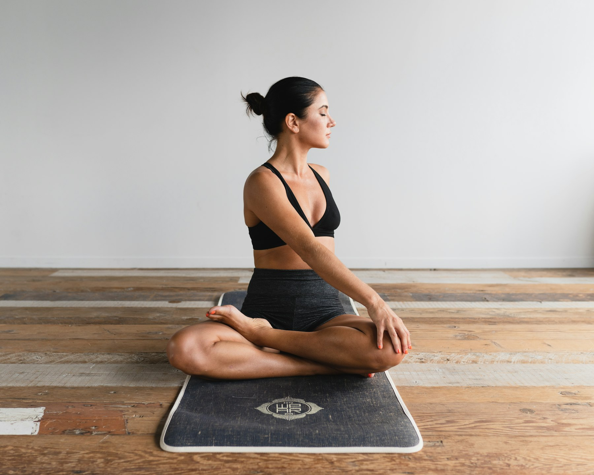
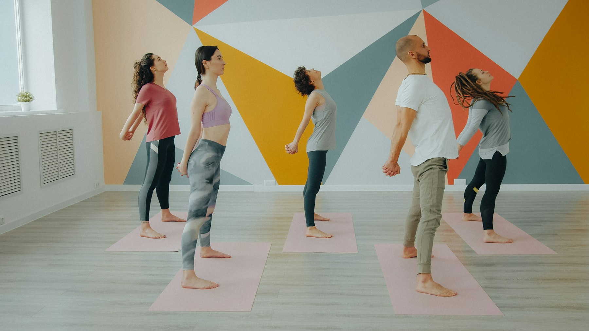

Featured · MindfulnessA five-minute breathing practice for anxious days
Practical advice and ideas from the Mindful team on a five-minute breathing practice for anxious days.
Read article →

SleepWhy you wake at 3 a.m. — and how to fall back asleep
Practical advice and ideas from the Mindful team on why you wake at 3 a.m. — and how to fall back asleep.

WorkSpotting the early signs of burnout
Practical advice and ideas from the Mindful team on spotting the early signs of burnout.
RelationshipsHow to talk about mental health with loved ones
Practical advice and ideas from the Mindful team on how to talk about mental health with loved ones.

Self-careBuilding a gentle morning routine
Practical advice and ideas from the Mindful team on building a gentle morning routine.

TherapyWhat to expect from your first therapy session
Practical advice and ideas from the Mindful team on what to expect from your first therapy session.
No articles found
Newsletter
Stay in the loop
Insights, news and ideas from our team — once a month, never spam.